RAM的空间，从第二兆开始部分被永久的分配给kernel code和kernel data.RAM开始的几兆空间是reserved,不会被动态分配和释放。剩下的RAM空间，叫做dynamic memory,被操作系统动态的分配和释放。
Page Descriptors
linux使用4KB的page frame作为标准内存分配单元，使用 type page 描述每个物理页面，其字段如下
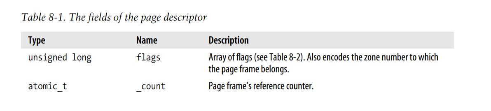
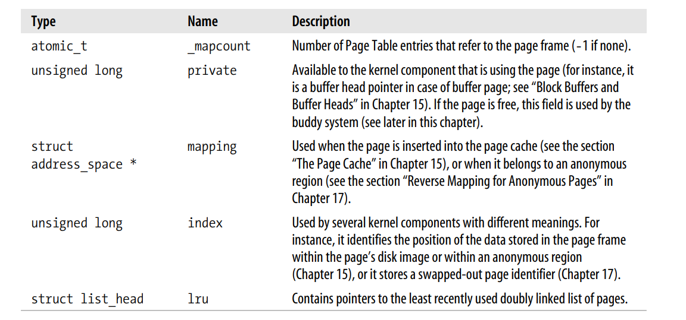
_count 该page frame的引用计数。如果没有被引用，为-1，该page frame是free的，没有被使用。如果大于等于0，则被使用了。
page_count()返回该值+1，the number of users of the page。flags 有32个描述page frame状态的标志。对于每个
PG_xyz标志，内核都定义了相应的宏来处理这个标志，比如PageXyz宏返回该标志的值，SetPageXyz和ClearPageXyz宏分别用来设置和清空该标志。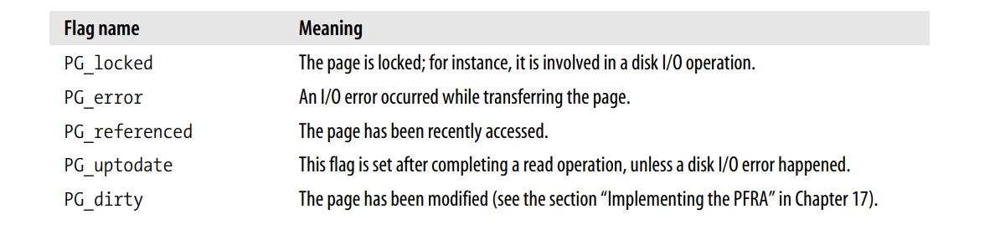
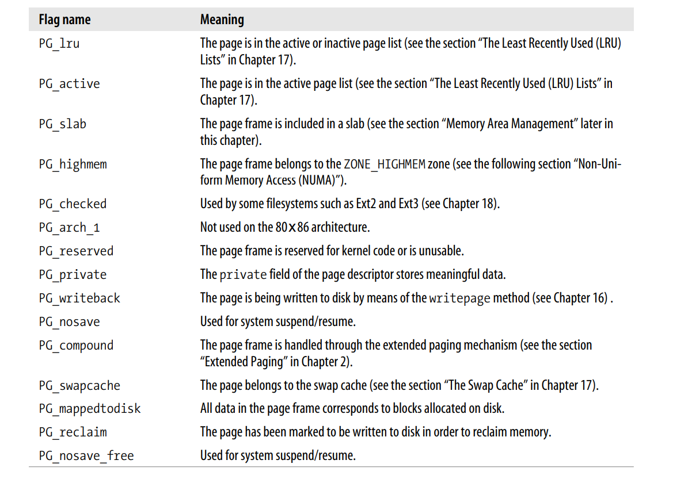
所有的page descriptors都存储在mem_map array中。每个描述符32bytes,所有的描述符占用空间less than 1% of the whole RAM。在系统初始化阶段设置好mem_map数组。
Non-Uniform Memory Access (NUMA)
我们习惯于认为内存是同质的，均匀的，所有cpu共享的资源，任意每个cpu访问任意内存位置的时间都是一样的。然而，对于某些架构的计算机，这种假设不成立，比如Alpha或者MIPS computers。 Linux 2.6支持NUMA Non-Uniform Memory Access 模型。物理内存被分为几个nodes,每个cpu访问不同的node中的内存，时间耗时不一样。每个cpu访问某个node中的内存任意位置，时间耗时是一样的，但不同的cpu访问某个node,时间耗时不一样。 在UMA内存模型中，只有一个node,IBM-compatible PCs使用UMA模型,本书只考虑UMA模型。
Memory Zones
如果线性地址32位，则linux内核将一个node的内存分为了一下几个zones:
- ZONE_DMA Contains page frames of memory below 16 MB
- ZONE_NORMAL Contains page frames of memory at and above 16 MB and below 896 MB
- ZONE_HIGHMEM Contains page frames of memory at and above 896 MB ZONE_DMA的存在是因为连接在 ISA bus上的外设，通过DMA直接访问内存时，只能访问RAM的前16MB ZONE_NORMAL和ZONE_HIGHMEM的划分，是因为内核地址空间只有1G,如果RAM大于1G,则内核地址空间不能完全直接映射所有的RAM,内核线性地址预留最高的128MB空间，可动态映射到任意内存，通常是映射到ZONE_HIGHMEM的内存。
而如果是64位架构的计算机，则内核地址空间通常足够大，可以完全直接映射所有的物理内存，则ZONE_HIGHMEM为空
zone描述符的类型是type zone,字段如下
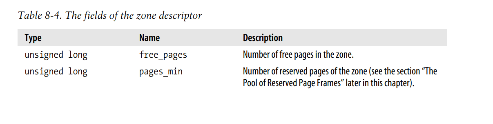
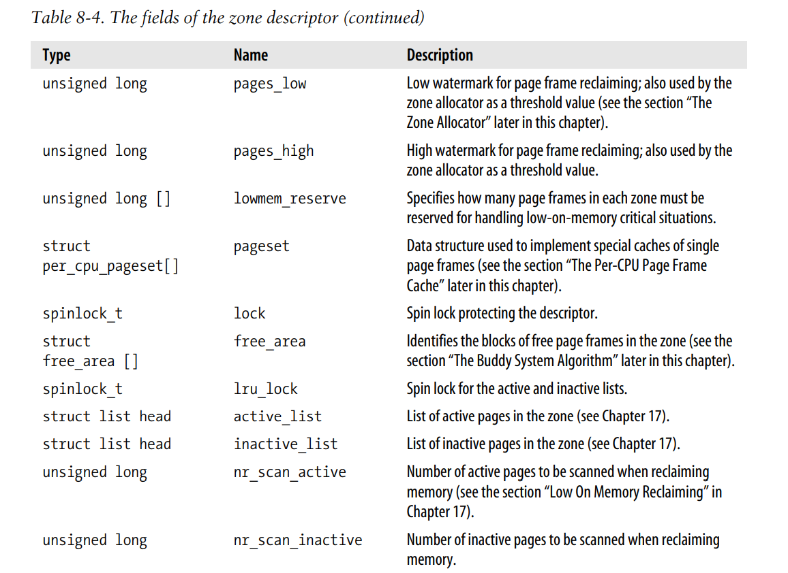
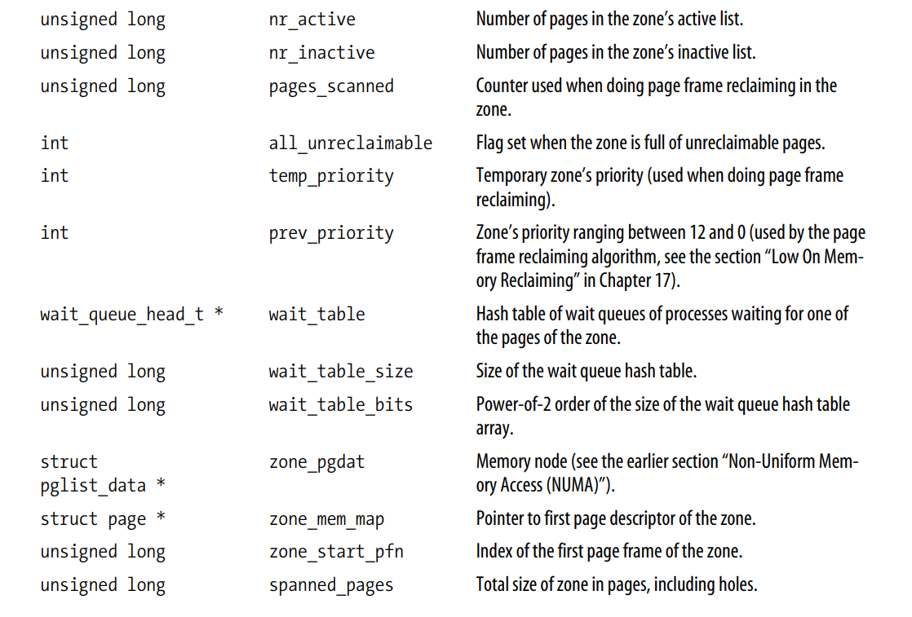
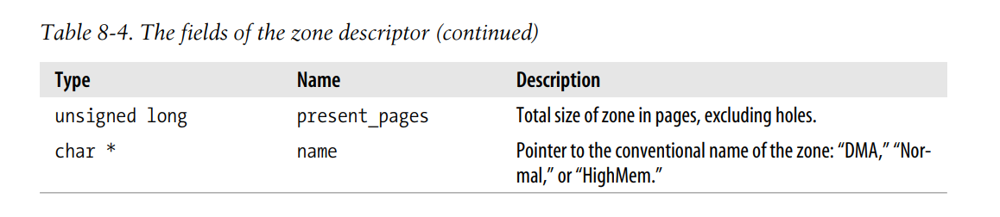
zone_tablearray存储所有的type zone,这个数组在boot time时初始化，包括所有node中的所有zone
每个页描述符都需要连接到其所在的zone,这个位置信息存储在页描述符中的flags字段的前几位。
page_zone()函数从指向页描述符的指针，读取flag字段中的前几位，获取其node number和zone number,然后去zone_tablearray中获取zone
当内核调用memory allocation function时，需要声明其希望所在的zone.
Requesting and releasing page frames
page frames的请求，有6个不同的宏和函数可调用。
- alloc_pages(gfp_mask, order) Macro used to request 2^order contiguous page frames. It returns the address of the descriptor of the first allocated page frame or returns NULL if the allocation failed.
- alloc_page(gfp_mask)
Macro used to get a single page frame; it expands to:
alloc_pages(gfp_mask, 0)It returns the address of the descriptor of the allocated page frame or returns NULL if the allocation failed. - __get_free_pages(gfp_mask, order) Function that is similar to alloc_pages(), but it returns the linear address of the first allocated page.
- get_free_page(gfp_mask) Macro used to get a single page frame; it expands to: `get_free_pages(gfp_mask, 0)`
- get_zeroed_page(gfp_mask)
Function used to obtain a page frame filled with zeros; it invokes:
__get_free_pages(gfp_mask | __GFP_ZERO, 0)and returns the linear address of the obtained page frame - get_dma_pages(gfp_mask, order) Macro used to get page frames suitable for DMA; it expands to: `get_free_pages(gfp_mask | __GFP_DMA, order)`
我们看到请求函数中的gfp_mask参数，The parameter gfp_mask is a group of flags that specify how to look for free page frames.
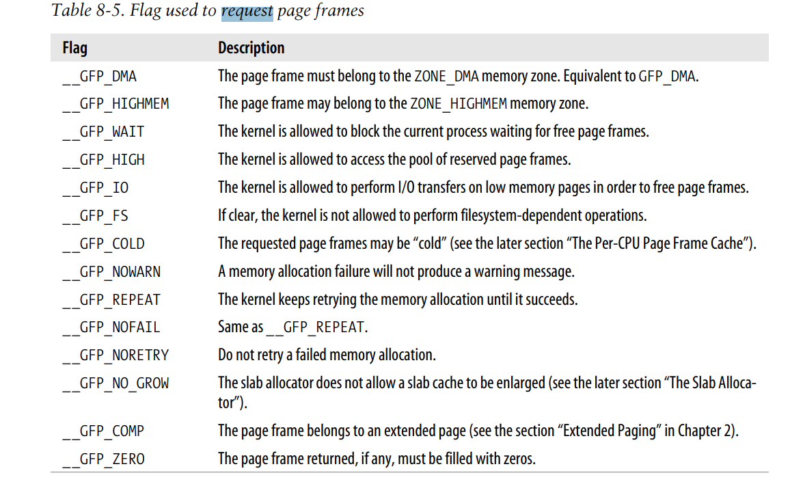
In practice, Linux uses the predefined combinations of flag values shown in Table 8-6; the group name is what you’ll encounter as the argument of the six page frame allocation functions.
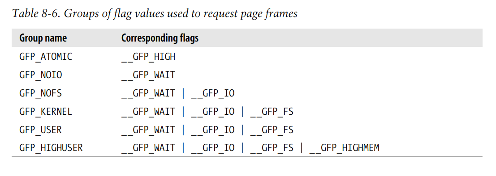
The GFP_DMA and GFP_HIGHMEM flags are called zone modifiers; they specify the zones searched by the kernel while looking for free page frames. 而如果参数中指定的ZONE不能满足内存请求，则还有fall back zones可被请求， In the 80 × 86 UMA architecture, the fallback zones are the following:
- If the
__GFP_DMAflag is set, page frames can be taken only from the ZONE_DMA memory zone - Otherwise, if the
__GFP_HIGHMEMflag is not set, page frames can be taken only from the ZONE_NORMAL and the ZONE_DMA memory zones, in order of preference. - Otherwise (the __GFP_HIGHMEM flag is set), page frames can be taken from ZONE_HIGHMEM, ZONE_NORMAL, and ZONE_DMA memory zones, in order of preference.
Page frames can be released through each of the following four functions and macros:
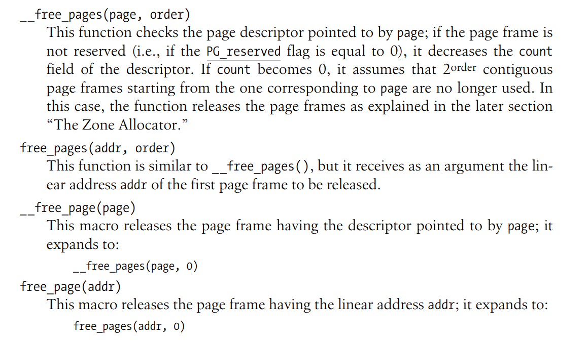
The Pool of Reserved Page Frames
内存分配请求的处理，如果空间内存足够，则请求可立即被满足。否则，需要回收内存，之前请求内存的kernel control path需要被阻塞，直到有内存被释放。
然而，一些 kernel control paths 并不能被阻塞休眠，比如，中断处理，critical region。在这种情况下，请求内存需要使用GFP_ATOMIC标志，表示如果空闲内存不能满足要求，则失败返回，而不是让请求的kernel control path休眠。
虽然内核无法保证atomic memory allocation request never fails，但是内存依然尽量降低失败的可能性，通过pool of reserved page frames，在处理atomic memory allocation请求时，如果剩余空闲内存很低了，则会使用这个pool of page frames。
这个被保留的空闲页面池的大小，保存在min_free_kbytes变量中，在内核初始化时设置初始值，这个值取决于ZONE_DMA and ZONE_NORMAL 内存区的大小
然而，初始值不能小于128k或者大于2^16k.
然后是这reserved page frames的分配问题，根据ZONE_DMA和ZONE_NORMAL大小的比例来。
pages_min, pages_low,pages_high ,这三个值都是是否要执行页面回收例程的阈值. pages_low field is always set to 5/4 of the value of pages_min, and pages_high is always set to 3/2 of the value of pages_min
The Zoned Page Frame Allocator
内核代码中，处理page frames分配的部分叫做zoned page frame allocator,如图
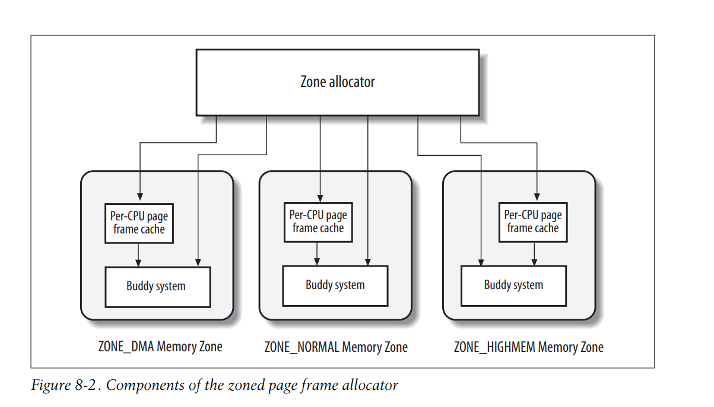
The component named “zone allocator” receives the requests for allocation and deallocation of dynamic memory. In the case of allocation requests, the component searches a memory zone that includes a group of contiguous page frames that can satisfy the request (see the later section “The Zone Allocator”). Inside each zone, page frames are handled by a component named “buddy system” (see the later section “The Buddy System Algorithm”). To get better system performance, a small number of page frames are kept in cache to quickly satisfy the allocation requests for single page frames (see the later section “The Per-CPU Page Frame Cache”).
The Buddy System Algorithm
内核的连续page frames分配算法，必须要能处理外部碎片问题。当频繁的分配和释放groups of contiguous page frames of different sizes，可能会导致内存中有很多small blocks of free page frames，但这些内存不是连续的，当之后需要分配大块的连续page frames之后，虽然剩余的内存是足够的，却不能分配。
Linux使用伙伴分配算法解决外部碎片问题。
所有的page frames被分成多个大小的块，块的大小供11种，分别是 1, 2, 4, 8, 16, 32, 64, 128, 256, 512, and 1024 个物理页面。
每种大小的块连成链表，共11个链表。 同时，每种大小的块，其第一个page frame的地址必须是块大小的整数倍。比如，一个16个page frame大小的块，其第一个页面的地址，必须是16*2^12，也就是2^16的整数倍。
我们举例说明伙伴分配算法
假设现在请求分配256个page frames,也就是1MB的内存，(在之前的页面请求函数中，请求页面的数量都是2的整数倍)，该算法首先检查 256-page-frame list中是否有free block,如果没有，则查看下一个大小的list，也就是512-page-frame list。如果存在free block,则分配其中的256 page frames ,剩下的256 page frames作为一个块被插入256-page-frame list中。如果没有，则再去1024-page-frame list中查找，如果存在，则分配256 page frames，剩下的page frames,其中的256 page frames被插入256-page-frame list,512 page frames被插入512-page-frame list中。如果还是不存在，the algorithm gives up and signals an error condition.
释放内存时，内核会试图将释放的内存与其上下连续的空闲内存合并成更大的内存块，比如释放size b的内存块，内核会试图找到与该内存相邻的size b内存块，合并成size 2b的内存块
- Both blocks have the same size, say b.
- They are located in contiguous physical addresses.
- The physical address of the first page frame of the first block is a multiple of 2 × b × 2^12. The algorithm is iterative; if it succeeds in merging released blocks, it doubles b and tries again so as to create even bigger blocks.
Data structure
Linux 2.6给每个zone使用不同的buddy system，因此在80 × 86 架构中，存在3个buddy system:the first handles the page frames suitable for ISA DMA,the second handles the “normal” page frames,the third handles the highmemory page frames.
跟buddy system有关的数据结构：
free_area表示某个大小的空闲链表
struct free_area {
struct list_head free_list;
unsigned long nr_free;
};
其中的free_list指向该链表，该链表的每个元素是每个空闲块的起始page frame的页描述符中的lru字段，lru字段的类型为struct list_head。当然，如果page frame不空闲，则lru字段会表示别的意思。
nr_free为该链表空闲块的数量
zone描述符中的free_area字段，其类型为struct free_area []为该zone所有大小的空闲链表。
最后，每个块的第一个page frame的描述符中，private字段存储该块的大小（the order of the block）
Allocating a block
__rmqueue()函数用于寻找free block,参数是zone descriptor的地址，和order,即申请的页面数量。如果找到满足条件的块，则返回该块的第一个页面的页面描述符的地址，否则返回NULL
__rmqueue()函数假设调用者已经disabled local interrupts and acquired the zone->lock spin lock，其代码大概如下
struct free_area *area;
unsigned int current_order;
for (current_order=order;current_order<11; ++current_order) {
area = zone->free_area + current_order;
if (!list_empty(&area->free_list))
goto block_found;
}
return NULL;
当遍历到的链表不空时，跳转到的代码如下
block_found:
page = list_entry(area->free_list.next, struct page, lru);
list_del(&page->lru);
ClearPagePrivate(page);
page->private = 0;
area->nr_free--;
zone->free_pages -= 1UL << order;
如果最终找到free block的链表的current_order大于请求的order,后续的操作如下
size = 1 << curr_order;
while (curr_order > order) {
area--;
curr_order--;
size >>= 1;
buddy = page + size;
/* insert buddy as first element in the list */
list_add(&buddy->lru, &area->free_list);
area->nr_free++;
buddy->private = curr_order;
SetPagePrivate(buddy);
}
return page;
Freeing a block
__free_pages_bulk()函数释放free page frames.其参数如下
- page:释放的块的第一个page frames的描述符
- zone:The address of the zone descriptor
- order:The logarithmic size of the block
该函数如之前一样，假设调用者已经 disabled local interrupts and acquired the zone->lock spin lock。
__free_pages_bulk()函数在最开始声明并初始化了一些本地变量
struct page * base = zone->zone_mem_map;
unsigned long buddy_idx, page_idx = page - base;
struct page * buddy, * coalesced;
int order_size = 1 << order;
page_idx变量存储释放的内存块中第一个页面在zone中的索引。order_size是释放的页面数量,用来增加zone中的free_pages，如下
zone->free_pages += order_size;
之后函数进入最多10次的循环，每个循环中试图与其buddy合并。从当前的order到最大的order
while (order < 10) {
buddy_idx = page_idx ^ (1 << order);
buddy = base + buddy_idx;
if (!page_is_buddy(buddy, order))
break;
list_del(&buddy->lru);
zone->free_area[order].nr_free--;
ClearPagePrivate(buddy);
buddy->private = 0;
page_idx &= buddy_idx; //如果合并的buddy在之前，则合并后的块，index中的第order位为0
order++;
}
在每次的循环中，首先试图找到page_idx在当前order下的buddy_idx,这个index的计算很简单
buddy_idx = page_idx ^ (1 << order);
如果page_index在第order位的值是1，则其buddy是之前的块，也就是位是0，如果值是0，则buddy是之后的一块，值是1.所以就是第order位的值取反
获取到buddy后，需要检查该buddy块是否可以合并
int page_is_buddy(struct page *page, int order)
{
if (PagePrivate(page) && page->private == order && !PageReserved(page) && page_count(page) ==0)
return 1;
return 0;
}
如果不满足，则该循环被中断，到目前为止合并的块被插入到对应的list中并做相应的更新
coalesced = base + page_idx;
coalesced->private = order;
SetPagePrivate(coalesced);
list_add(&coalesced->lru, &zone->free_area[order].free_list);
zone->free_area[order].nr_free++;
The Per-CPU Page Frame Cache
kenel经常请求和释放一个page frame,为了提高内存分配的性能，每个memory zone都专门给单页面的分配和释放配置了per-cpu page frame cache,这个cache的存在可以绕过buddy system
每个memroy zone 给每个cpu配置了2种page-frame cache,hot cache,其中存储的页面更有可能被缓存到cpu的cache中，比如用于kernel or user process 访问。和cold cache,其中存储的页面一般不会被缓存到cpu的cache中，一般用于dma访问。
zone 描述符中的pageset字段，存储该per-cpu page frame cache, 类型如下
struct per_cpu_pageset[] pageset
该数组中的每个元素代表一个cpu的page cache,per_cpu_pageset中包括两个per_cpu_pages描述符，分别代表hot和cold cache. per_cpu_pages中的字段如下
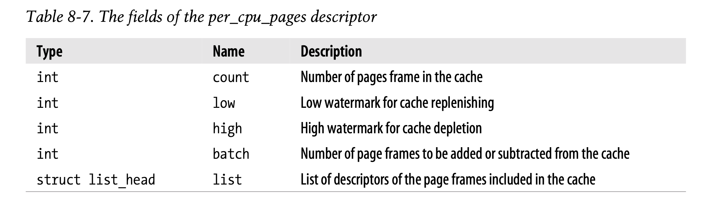
内核通过对low,high ，以及count这几个字段的监控，来调整cache的大小。如果当前的count数量低于low 内核会分配batch个single pages给该cache。同理，如果当前的count数量高于high ，则内核会将batch个single pages返回给buddy system。low，high，batch这3个字段的值，本质上取决于zone memory的大小。Allocating page frames through the per-CPU page frame caches
buffered_rmqueue()函数在分配page frames时，可以使用 per-cpu page frame cache 来处理单页面的分配。 参数是memory zone descriptor的地址，order,以及gfp_flags.如果设置了__GFP_COLD标志，则会从cold cache中分配内存，否则的话从hot cache中分配内存。 当然，这个标志只对分配单页面有效。
该函数的执行步骤如下
1：如果order不是0，则无法使用per-cpu page cache, 跳转到step 4
2:检查相应的per-cpu page cacha的页面数量是否低于low watermark,是的话，执行以下的分配
a: 重复调用__rmqueue( )函数,从buddy system中分配batch个single page frames
b:将这些分配的页面的页描述符插入到cache链表中
c:更新 cache中count的值
3：如果该cache中count大于0，则该函数从该cache中获取一个页面，跳转套step 5.这里count可以等于0，如果第二步的分配失败的话
4：到这一步，我们的页面请求还没有被满足，要么是请求的页面数不是一个，要么是page cache 是空的，这一步直接调用__rmqueue( ) 函数从buddy system来分配page frames.
5: 如果页面分配成功，函数将页面的描述符中的字段设置好，clears some flags, sets the private field to zero, and sets the page frame reference counter to one. Moreover, if the __GPF_ZERO flag in gfp_flags is set, it fills the allocated memory area with zeros.
6： Returns the page descriptor address of the (first) page frame, or NULL if the memory allocation request failed.
Releasing page frames to the per-CPU page frame caches
free_hot_cold_page()函数可以释放页面到page cache中。其参数为，页面描述符的地址，和一个cold flag, 表示是释放到hot还是cold cache中。步骤如下
1：从page->flag字段中获取zone descriptor,表示该页属于哪个zone
2: 根据cold flag参数，从zone中获取相应的per_cpu_pages
3：首先检查该cache的空闲页面是否过多，大于high watermark,需要释放 batch个页面到buddy system中
4：将该页面放回cache中
The Zone Allocator
zone allocator在分配页面时，需要能处理内存吃紧时的页面回收。
对于连续内存页面的请求，最终都会调用到alloc_pages macro，这个宏，ends up invoking __alloc_pages( ) function,which is the core of the zone allocator. It receives three parameters:
- gfp_mask
- order
- zonelist Pointer to a zonelist data structure describing, in order of preference, the memory zones suitable for the memory allocation
struct zonelist { struct zone *zones[MAX_NUMNODES * MAX_NR_ZONES + 1]; // NULL delimited };for (i = 0; (z=zonelist->zones[i]) != NULL; i++) { if (zone_watermark_ok(z, order, threshold)) { page = buffered_rmqueue(z, order, gfp_mask); if (page) return page; } }
__alloc_pages()函数的具体步骤如下
执行for循环的第一遍扫描，这次扫描，给zone_watermark_ok函数传入的threshold是zone->page_low. zone_watermark_ok会根据这个阈值计算剩余内存能否满足要求。
如果第一遍扫描不满足，该函数awakens the kswapd kernel threads。该kernel thread 会异步的执行页面回收算法
执行第二遍扫描，并传入z->pages_min threshold。这个阈值比之前的要低
如果这一边扫描还是不满足，则系统现在肯定内存吃紧了。如果该请求是必须的(__GFP_ATOMIC)，则再执行一次扫描，绕过zone_watermark_ok()，从low-on-memory reserve of pages中获取内存。如果还是没有，return NULL
如果不是必须得，则看是否设置了__GFP_WAIT,如果没有，则返回NULL
如果可以休眠，则invokes cond_resched(),这个函数会检查当前进程的thread_info中是否设置了TIF_NEED_RESCHED标志，这个标志被设置，意味着有更高优先级进程需要运行，当前进程调用schedule()让出cpu。
Sets the PF_MEMALLOC flag of current, to denote the fact that the process is ready to perform memory reclaiming.
Stores in current->reclaim_state a pointer to a reclaim_state structure. This structure includes just one field,
reclaimed_slab, initialized to zeroInvokes try_to_free_pages() to look for some page frames to be reclaimed 。 The latter function may block the current process. Once that function returns,
__alloc_pages()resets the PF_MEMALLOC flag of current and invokes once more cond_resched().如果之前的一步释放了内存，则再扫描一遍，并传入z->pages_min threshold参数。如果还不行，则看_GFP_NORETRY,GFP_REPEAT,GFP_NOFAIL这些标志的设置情况，决定是直接返回NULL，还是再执行一次try_to_free_pages()
如果还是不行，则可能需要kill process才能获取内存了。kill process需要执行 filesystem-dependent operations，因此需要设置了GFP_FS flag。如果请求设置了GFP_FS flag,并且__GFP_NORETRY没有设置，则会执行一下两步骤：
- 在kill process之前，先看下是否有别的进程kill process了，释放了一部分内存。因此再执行一遍for循环，不过这次的threshold是z-> pages_high
- 如果没有满足，则invoke out_of_memory(),这个函数会killing a victim process
- Jumps back to step 1
Releasing a group of page frames
这个内存释放就很简单了，要么释放回zone 的per-cpu page cache中，要么释放回zone的buddy system中。具体略。
Memory Area Management
之前讲的是物理页面的分配，如果是任意大小的内存的分配，则使用slab allocator.
连续物理页面的分配，我们使用buddy system 处理外部碎片问题。当分配任意大小的内存时，如果分配的大小大于实际需要的大小，则又会有内部碎片的问题。
早起的linux版本，提供几何分布的小内存链表，比如每个链表的大小是2的幂次方，一共13个链表，从32byte到131072byte(2^17),这种分配方式可以将内部碎片控制在50%以下。
当然，这些几何分布的内存所需的page frames，最终还是从 buddy system 中分配和释放。
The Slab Allocator
这种简单的在buddy system之上，建立不同大小的memory areas的链表，做任意大小的内存的分配和释放操作，并不是最优的。
Sun Microsystems Solaris 2.4 operating system 最早采用了slab allocator schema,将分配的小内存视为object(对象),每种对象对应一个cache，比如有用于进程描述符分配的cache,有用于打开文件对象的cache,还有通用的cache。object释放时直接缓存在cache中，可用于下次分配。对于需要频繁分配和释放的对象，这样既减少实际内存的分配和释放，又能减少对象的初始化次数。
一个cache由多个slab组成，每个slab由一个或多个连续的page frames组成，分配和释放的object存储在每个slab中。一个cache中的slab,根据其中的object的使用情况，分为empty slab,也就是其中所有的object都没有被使用，full slab,也就是其中所有的object都被使用了，和half-full slab,也就是其中的object部分被使用了。
object, slab , cache的对应关系如下
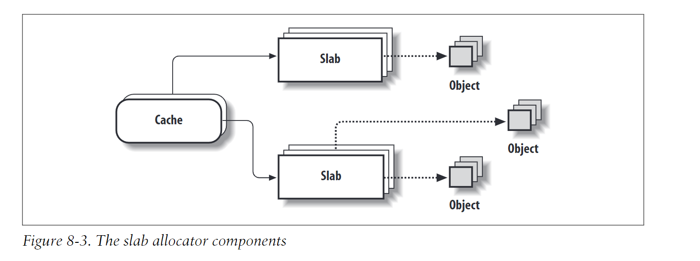
内核会定期的扫描caches,释放empty slab的page framesCache Descriptor
每个cache的cache描述符的类型为 kmem_cache_t,其中的字段如下
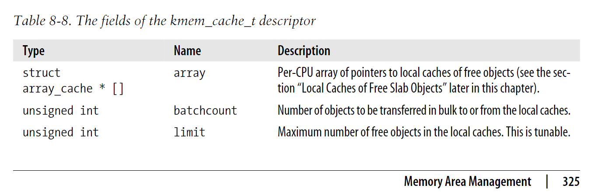
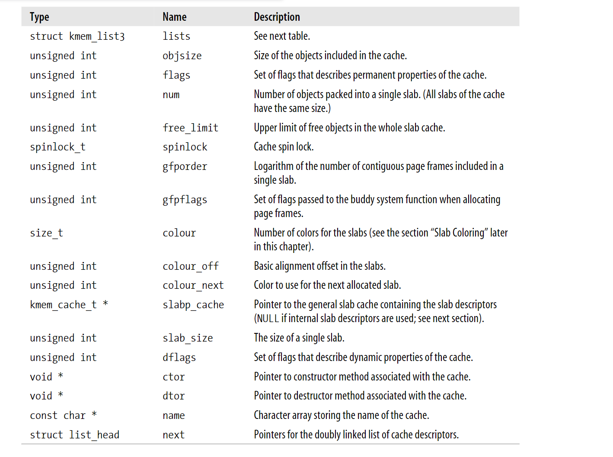
这其中的list字段，包含的三个slab链表，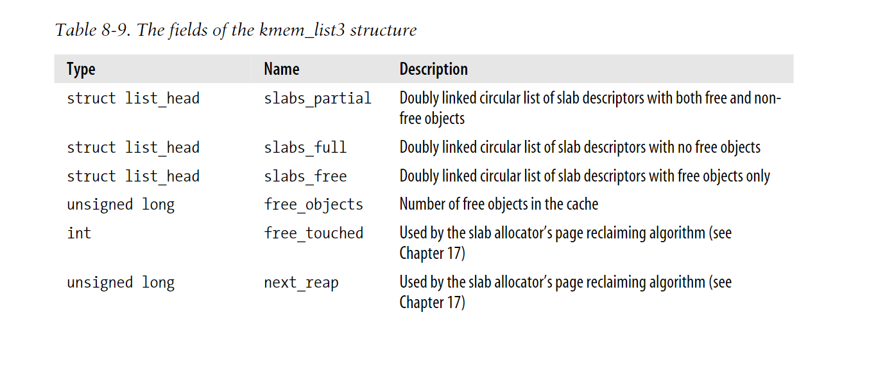
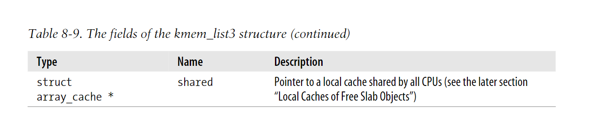
Slab Descriptor
slab的描述符类型是slab,其中的字段如下
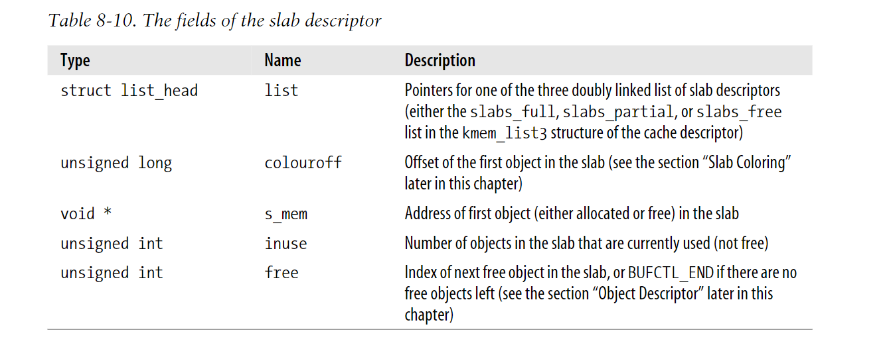
slab descriptor可存储在slab第一个page frames的开头，或者存储在通用cache中cache中的 flag字段，如果CFLGS_OFF_SLAB标志设置了，则slab描述符存储在slab外，在通用的cache中，该cache由cache描述符中的slabp_cache指向。如果没有设置，则存储在slab内。
下图展示了cache之间，和cache对应的三个slab链表之间的关系
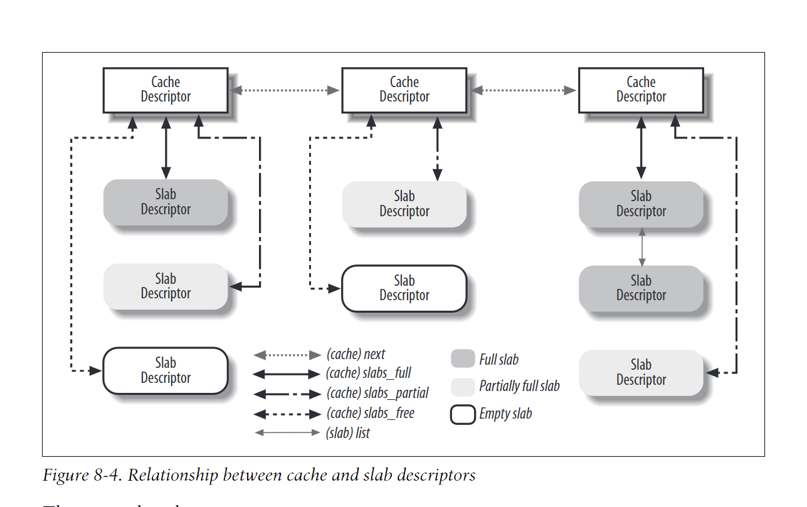
General and Specific Caches
cache分为两种，general和specific，specific cache内核在需要的时候，会为特定的对象创建。
general caches有以下几个：
- kmem_cache,其中存储cache描述符。 cache_cache这个变量存储这个cache的cache描述符
- 其他几个存储 general purpose memory areas的cache。这些memory area的大小是几何分布的，供13种大小，分别为32, 64, 128, 256, 512,1,024, 2,048, 4,096, 8,192, 16,384, 32,768, 65,536, and 131,072 bytes. 每种大小对应2个caches,一个用于ISA DMA,一个用于normal allocation
/* Size description struct for general caches. */
struct cache_sizes {
size_t cs_size;
kmem_cache_t *cs_cachep;
kmem_cache_t *cs_dmacachep;
};
extern struct cache_sizes malloc_sizes[];
/* These are the default caches for kmalloc. Custom caches can have other sizes. */
struct cache_sizes malloc_sizes[] = {
#define CACHE(x) { .cs_size = (x) },
#include <linux/kmalloc_sizes.h>
{ 0, }
#undef CACHE
};
在系统初始化时，会调用 kmem_cache_init()函数初始化general caches
specific caches是通过调用kmem_cache_create()函数创建的。由参数决定该cache的属性，比如，其slab 描述符是存储在slab中还是存储在general cache中。然后分配cache描述符，从cache_cache general cache中分配。并将该描述符插入cache链表中
specific caches还可以通过调用kmem_cache_destroy()来释放该cache。这通常用于模块中，在模块加载时为其创建cache，模块卸载时释放cache. 所有的general和specific caches的名字都可以在运行时通过/proc/slabinfo获取，该文件中还会显示该cache中所有的free和allocated objects的数量。
Interfacing the Slab Allocator with the Zoned Page Frame Allocator
当slab allocator创建new slab时，它依赖于zoned page frame allocator来分配页面，调用kmem_getpages()函数，其逻辑基本如下
void * kmem_getpages(kmem_cache_t *cachep, int flags)
{
struct page *page;
int i;
flags |= cachep->gfpflags;
page = alloc_pages(flags, cachep->gfporder);
if (!page)
return NULL;
i = (1 << cache->gfporder);
if (cachep->flags & SLAB_RECLAIM_ACCOUNT)
atomic_add(i, &slab_reclaim_pages);
while (i--)
SetPageSlab(page++);
return page_address(page);
}
cachep：指向 cache descriptor,这个cache中slab的page frames数量，由cachep->gfporder字段决定。 flags: Specifies how the page frame is requested. This set of flags is combined with the specific cache allocation flags stored in the gfpflags field of the cache descriptor
如果cachep中flags字段设置了SLAB_RECLAIM_ACCOUNT标志，则这个cache分配的页面是reclaimable的。该函数同时设置了page中的PG_slab标志。
slab的页面也可释放，调用kmem_freepages()函数
void kmem_freepages(kmem_cache_t *cachep, void *addr)
{
unsigned long i = (1<<cachep->gfporder);
struct page *page = virt_to_page(addr);
if (current->reclaim_state)
current->reclaim_state->reclaimed_slab += i;
while (i--)
ClearPageSlab(page++);
free_pages((unsigned long) addr, cachep->gfporder);
if (cachep->flags & SLAB_RECLAIM_ACCOUNT)
atomic_sub(1<<cachep->gfporder, &slab_reclaim_pages);
}
Allocating a Slab to a Cache
一个新创建的cache没有slab，因此也没有free object.只有在以下两种情况都发生时，才会为该cache创建新的slab
- 请求分配一个new object
- cache中没有free object
当这两种情况都满足时，slab allocator会调用 cache_grow()函数给cache分配新的slab. 这个函数会调用kmem_getpages()从zoned page frame allocator中获取page frames,然后调用alloc_slabmgmt()函数获取新的slab descriptor.如果cache flags中设置了CFLGS_OFF_SLAB标志，该描述符从general cache pointed to by the slabp_cache field of the cache 中分配，否则，从slab的第一个page frame头处分配。
给slab分配的page也需要跟其对应的slab和cache关联，cache_grow()会给每个分配给slab的页面，将其lru字段中的next和prev这两个指针分别指向cache描述符和slab描述符。
然后 cache_grow()函数会调用cache_init_objs()，该函数会对slab中的所有object，调用 constructor方法，如果该方法定义了的话。
最后，cache_grow()再调用list_add_tail(),将该slab加入cache的free slab list的尾部，并更新cache中的计数，如下
list_add_tail(&slabp->list, &cachep->lists->slabs_free);
cachep->lists->free_objects += cachep->num;
Releasing a Slab from a Cache
Slabs can be destroyed in two cases:
There are too many free objects in the slab cache
A timer function invoked periodically determines that there are fully unused slabs that can be released (see Chapter 17).
slab_destroy()函数会被调用，释放该slab的所有page frames到 zoned page frame allocator.
void slab_destroy(kmem_cache_t *cachep, slab_t *slabp)
{
if (cachep->dtor) {
int i;
for (i = 0; i < cachep->num; i++) {
void* objp = slabp->s_mem+cachep->objsize*i;
(cachep->dtor)(objp, cachep, 0);
}
}
kmem_freepages(cachep, slabp->s_mem - slabp->colouroff);
if (cachep->flags & CFLGS_OFF_SLAB)
kmem_cache_free(cachep->slabp_cache, slabp);
}
Object Descriptor
存储在slab中的每个object，也有其描述符，类型是kmem_bufctl_t,也就是一个unsigned short
typedef unsigned short kmem_bufctl_t;
一个slab中，所有对象的描述符存在一个数组中，这个数组存储在slab描述符之后。因此，同slab描述符一样，object描述符也有两个存储方式
external object descriptors
存储在cache描述符中slabp_cache 字段指向的cache中。这是一个general cache,其memroy area的大小，取决于slab中存储的object数量，也就是cache描述符中的num字段
Inernal object descriptors
存储在slab中，在slab描述符之后存储该数组。
每个object按顺序对应一个数组元素。只有该object是free的，该数组元素才有效，其中存储的是下一个free object的index。因此，所有的free object组成了一个simple list.这个list的最后一个数组元素，其中存储的值为BUFCTL_END (0xffff).
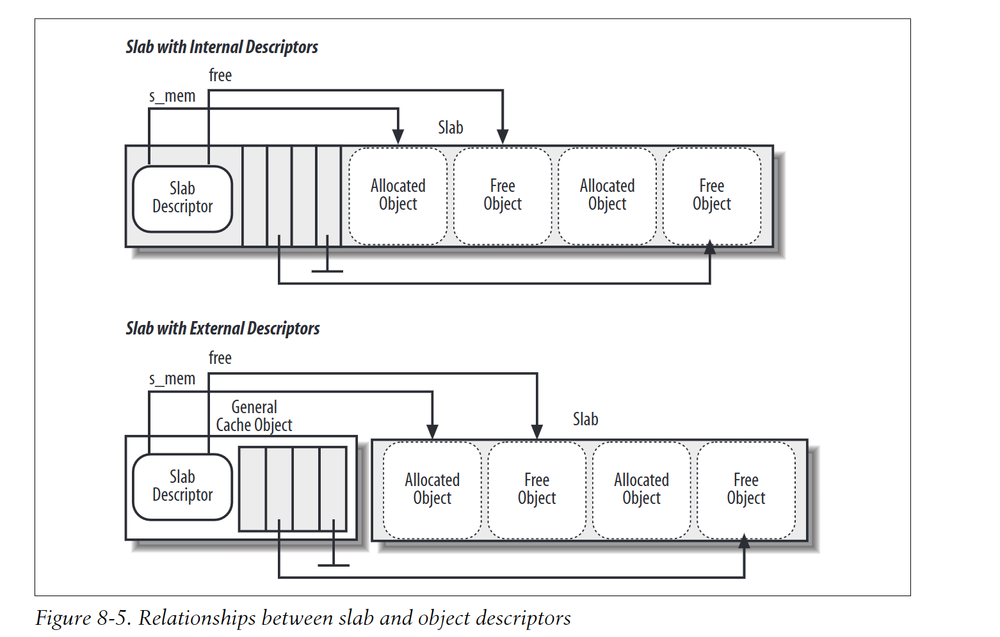
Aligning Objects in Memory
slab 中存储的object在内存中是对齐存放的。要么对齐到字大小的。80x86处理器的字大小是4byte.要么对齐到 first-level hardware cache. 这需要将cache的flags字段中设置SLAB_HWCACHE_ALIGN标志。当设置了该标志后
如果object的大小大于cache line的一半（cache line通常是几十到一百多的字节），则aligned in RAM to a multiple of L1_CACHE_BYTES，that is, at the beginning of the line
Otherwise, the object size is rounded up to a submultiple of L1_CACHE_BYTES; this ensures that a small object will never span across two cache lines.
Clearly, what the slab allocator is doing here is trading memory space for access time; it gets better access performance by artificially increasing the object size, thus causing additional internal fragmentation.
Slab Coloring
我们知道同一个cache line会映射到多个memory block处。同时，一个cache是由多个slab组成。每个slab到目前位置，其中存储的object的开始偏移都是一样的，他们很有可能会映射到同一个cache line中。The cache hardware might therefore waste memory cycles transferring two objects from the same cache line back and forth to different RAM locations,while other cache lines go underutilized.
slab allocator 通过给每个slab赋予不同的颜色，其实也就是每个slab中object开始存储的偏移不一样，来降低这种cache冲突。
- aln: slab中object的对齐因子。
- num:表示slab中可以存储的object数量。
- osize:object size,包括对齐的字节
- dsize:slab 描述符大小+ 所有的object描述符大小，rounded up to the smallest multiple of the hardware cache line size. Its value is equal to 0 if the slab and object descriptors are stored outside of the slab.
- free: Number of unused bytes (bytes not assigned to any object) inside the slab.
slab length=(num*osize) + dsize + free
fee永远小于osize,否则就能多存储1个object了。然而，free可以大于aln。
slab color就是使用free大小来给一个cache中的所有slab上不同的颜色。
slab的颜色不同，其存储第一个object的起始偏移不同。
一个object cache的所有可用颜色数量用free/aln表示，这个值存储在cache描述符中的colour字段中。
第一个可用的颜色是0，也就是偏移是0个aln,最后一个可用的颜色是free/aln-1,也就是偏移free/aln-1个aln.
当然，如果free小于aln,则只有一个颜色，也就是cache中的所有slab，object的起始偏移都是相同的。
加上起始的color偏移后，最后的free空间的大小，就减去了这个偏移
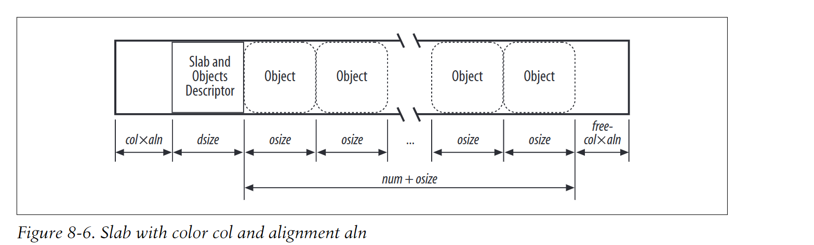
那么一个cache的所有colour是怎么分配的呢？在cache描述符中的colour_next中存储下一个slab的color。
当我们调用cache_grow()在cache分配新的slab时，该slab的color就是colour_next.同时，该值会增1，如果等于color总数，再wrap around to 0.
同时，cache_grow()函数还从cache描述符中获取colour_off字段的值，也就是aln,根据object数量算出dsize的大小，最终将col*aln + dsize的值存储到slab描述符的colouroff字段中，也就是开始存储object的偏移量。
Local Caches of Free Slab Objects
Linux 2.6 给多处理器提供了每个处理器的slab cache,这样可以减少多处理器对slab的争用
cache描述符中的array数组中的每个元素对应每个cpu的local slab cache, 其数据类型为array_cache，各字段含义如下
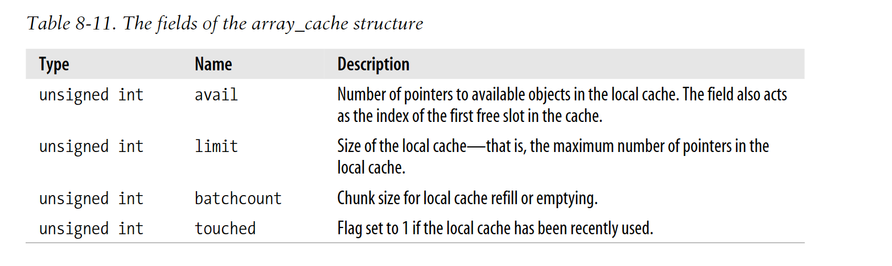
指向free_object的指针，紧跟着存储在array_cache之后。当然实际的free_object，还是存储在slab中。When creating a new slab cache, the kmem_cache_create() function determines the size of the local caches (storing this value in the limit field of the local cache descriptor), allocates them, and stores their pointers into the array field of the cache descriptor. The size depends on the size of the objects stored in the slab cache, and ranges from 1 for very large objects to 120 for small ones. Moreover, the initial value of the batchcount field, which is the number of objects added or removed in a chunk from a local cache, is initially set to half of the local cache size. The system administrator can tune—for each cache—the size of the local caches and the value of the batchcount field by writing into the /proc/slabinfo file
In multiprocessor systems, slab caches for small objects also support an additional local cache, whose address is stored in the lists.shared field of the cache descriptor. The shared local cache is, as the name suggests, shared among all CPUs, and it makes the task of migrating free objects from a local cache to slab cache easier . Its initial size is equal to eight times the value of the batchcount field.
Allocating a Slab Object
kmem_cache_alloc函数可以从cache中获取一个obj对象，其过程基本如下
void * kmem_cache_alloc(kmem_cache_t *cachep, int flags)
{
unsigned long save_flags;
void *objp;
struct array_cache *ac;
local_irq_save(save_flags);
ac = cache_p->array[smp_processor_id()];
if (ac->avail) {
ac->touched = 1;
objp = ((void **)(ac+1))[--ac->avail];
} else
objp = cache_alloc_refill(cachep, flags);
local_irq_restore(save_flags);
return objp;
}
cachep指向其cache，flags是如果需要从zoned page frame allocator中获取页面，请求中的flag.
该函数试图从local cache中获取obj，如果local cache中有free objects,则通过
objp = ((void **)(ac+1))[--ac->avail];返回其指针
否则的话，需要调用 cache_alloc_refill(cachep,flags),repopulate the local cache and get a free object。
The cache_alloc_refill() function essentially performs the following steps:
- 在本地变量ac中存储指向local cache描述符的指针
ac = cachep->array[smp_processor_id()];
Gets the cachep->spinlock.
如果该cache中有shared local cache,并且该shared local cache中有free objects,则最多从该shared local cache中获取ac->batchcount的free object，然后跳转到step 5.
否则的话，需要从slab中获取free object了。
a. 要么从free slab要么从partial free slab中获取，gets the address slabp。如果没有，则跳转到step 5.
b. 对于slabp中的每个free object,the function increases the inuse field of the descriptor, inserts the object’s address in the local cache, and updates the free field so that it stores the index of the next free object in the slab:
slabp->inuse++; ((void**)(ac+1))[ac->avail++] = slabp->s_mem + slabp->free * cachep->obj_size; slabp->free = ((kmem_bufctl_t*)(slabp+1))[slabp->free];c. Inserts, if necessary, the depleted slab in the proper list, either the slab_full or the slab_partial list.
到目前为止，我们给local cache增加的free object的数量存储在ac->avail 字段中，我们也需要从cache中减去这个数量的free object. cache描述中的kmem_list3字段中的free_objects 减去ac->avail.
Releases the cachep->spinlock.
If the ac->avail field is now greater than 0 (some cache refilling took place), it sets the ac->touched field to 1 and returns the free object pointer that was last inserted in the local cache:
return ((void**)(ac+1))[--ac->avail];Otherwise, no cache refilling took place: invokes cache_grow() to get a new slab, and thus new free objects.
If cache_grow() fails, it returns NULL; otherwise it goes back to step 1 to repeat the procedure.
Freeing a Slab Object
kmem_cache_free()函数释放object，其过程大概如下
void kmem_cache_free(kmem_cache_t *cachep, void *objp)
{
unsigned long flags;
struct array_cache *ac;
local_irq_save(flags);
ac = cachep->array[smp_processor_id()];
if (ac->avail == ac->limit)
cache_flusharray(cachep, ac);
((void**)(ac+1))[ac->avail++] = objp;
local_irq_restore(flags);
}
如果local cache中的空间已经满了，需要调用cache_flusharray()来释放local cache中的空间。其步骤如下：
Acquires the cachep->spinlock spin lock
如果cache 有 shared local cache, 并且shared local cache没有满，则refills the shared local cache. 最多移动ac->batchcount个free object的指针。然后跳转到步骤4
否则调用 free_block()函数最多将ac->batchcount个free object返回给slab，对于每个被返还的objp而言，该函数执行如下的步骤
cache描述符中的lists.free_objects增加1
根据objp,获得这个object所属于的slab
slabp = (struct slab *)(virt_to_page(objp)->lru.prev);将该slab从其所在的slab list移出。要么是partial list,要么是full list
计算该object在slab中的索引
objnr = (objp - slabp->s_mem) / cachep->objsize;在object的描述符中存储 slabp->free,并且将slabp->free更新
((kmem_bufctl_t *)(slabp+1))[objnr] = slabp->free; slabp->free = objnr;Decreases the slabp->inuse field
如果 slabp->inuse 等于0，并且 当前cache中的所有free object的数量， cachep->lists.free_objects，大于其限制，cachep->free_limit,则将该slab的page frames 释放回 zoned page frame allocator
cachep->lists.free_objects -= cachep->num; slab_destroy(cachep, slabp);The value stored in the cachep->free_limit field is usually equal to cachep->num + (1+N) × cachep->batchcount, where N denotes the number of CPUs of the system.
- 否则，将该slab插入相应的list中，要么为empty list,要么为partial list
Releases the cachep->spinlock spin lock.
Updates the avail field of the local cache descriptor by subtracting the number of objects moved to the shared local cache or released to the slab allocator.
Moves all valid pointers in the local cache at the beginning of the local cache’s array. This step is necessary because the first object pointers have been removed from the local cache, thus the remaining ones must be moved up.
General Purpose Objects
infrequent requests for memory areas are handled through a group of general caches whose objects have geometrically distributed sizes ranging from a minimum of 32 to a maximum of 131,072 bytes.
Objects of this type are obtained by invoking the kmalloc( ) function, which is essentially equivalent to the following code fragment:
void * kmalloc(size_t size, int flags)
{
struct cache_sizes *csizep = malloc_sizes;
kmem_cache_t * cachep;
for (; csizep->cs_size; csizep++) {
if (size > csizep->cs_size)
continue;
if (flags & __GFP_DMA)
cachep = csizep->cs_dmacachep;
else
cachep = csizep->cs_cachep;
return kmem_cache_alloc(cachep, flags);
}
return NULL;
}
Objects obtained by invoking kmalloc( ) can be released by calling kfree( ):
void kfree(const void *objp)
{
kmem_cache_t * c;
unsigned long flags;
if (!objp)
return;
local_irq_save(flags);
c = (kmem_cache_t *)(virt_to_page(objp)->lru.next);
kmem_cache_free(c, (void *)objp);
local_irq_restore(flags);
}
Memory Pools
Memory Pools是2.6 linux kernel提供的功能，每个memory pool跟某个内核模块关联，比如 block device subsystem, 允许模块在内存不足时，可以从预先分配的memory pool中获取内存。 Memory Pool不要跟之前提到的 reserved page frames described in the earlier section "The Pool of Reserved Page Frames"混淆。之前提到的reserved page frames 只能用于atomic memroy allocation,比如interrupt handler,或者critical region 中的内存请求。而memroy pool是内核模块自己分配的，预防内存不足的情况。
通常情况下，memory pool中存储的内存同slab cache一样，也是用object表示的，但这不一定，memroy pool中预留的内存，可以是page frames,也可以是small memory areas allocated with kmalloc(),具体是什么由模块自己决定。 所以，我们将 memory units handled by a memory pool 称作memroy elements
一个memory pool的描述符类型是mempool_t,其字段如下
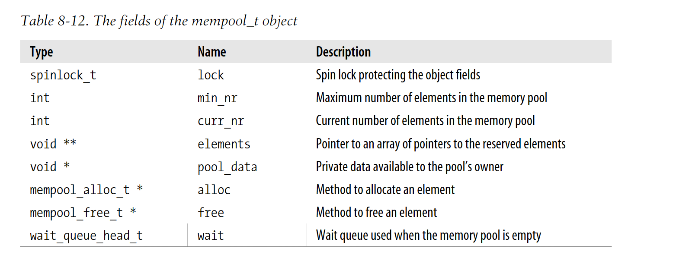
min_nr是memory pool中初始的memory elements数量，curr_nr是当前的数量，一定是小于 min_nr的。 memory pool中存储的memory elements的地址，存储在elements数组中。 alloc 和free方法用于memory elements的分配和释放，会和底层的slab cache或者zoned page frame allocator交互。如果memory elements是slab objects, alloc 和free方法，通常都是通过调用 kmem_cache_alloc()和 kmem_cache_free()实现的，在这种情况下，pool_data字段存储cache描述符的地址。mempool_create()函数创建新的memory pool,接收 min_nr, alloc,free,pool_data参数，给mempool_t结构体分配内存，给存储memory elements指针的数组分配内存，然后重复调用alloc方法分配min_nr 个 memory elements。 mempool_destroy()函数释放所有的memory elements，再释放数组和mempool_t的内存。
模块可以通过调用 mempool_alloc()函数从memory pool中获取内存。参数是mempool_t的地址，和内存请求的flags GFP_XXX,基本上，函数先通过alloc函数从底层的slab或者zoned page frame allocator中分配memory elements,如果成功了，函数返回memeory elements,不会touch memory pool,如果失败的话，就从memroy pool中分配。
mempool_free()函数将memory elemnts释放。如果当前memory pool没有满，也就是cur_min小于min_nrr,则将memory elements返回pool中，否则，调用free函数，释放回underlying memory allocator.